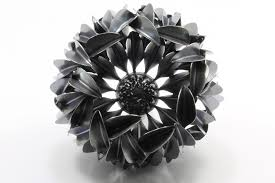

Om silver
Silver utgör bara en bråkdel av jordens totala metallmängd, och därför är silver mycket eftertraktat. Silver finns naturligt i ren form i naturen eller som en blandning med guld och andra ämnen. Silver leder både värme och elektricitet bäst av alla metaller. Dessutom är silver mycket formbart. Silvret kan dras till tunna silvertrådar och smidas ut till tunna silverplåtar. Det mesta silvret används inom fotoindustrin och den elektriska industrin. Vanligast är att silver produceras som en biprodukt när man framställer guld, bly, zink och koppar.
Visste du detta om silver
Silver dödar bakterier genom att påverka dess membran, något bakterier inte kan skydda sig mot. Därför används ofta silverjoner där man behöver döda bakterier; exempelvis i kylskåp eller anti-lukt produkter.